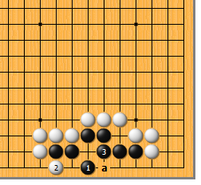
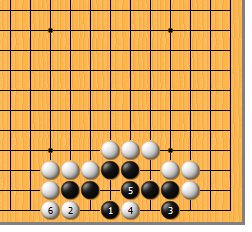
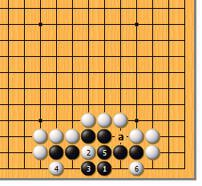
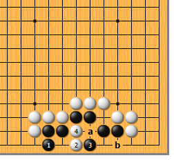
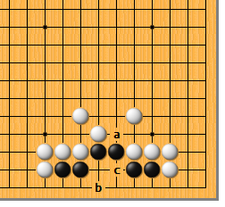
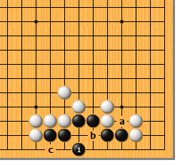
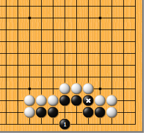

|  |  | |
| 图1 黑1虎，是唯一正确的招法。白2如扳，黑3做眼，确保做活。黑1时，白2如于3位点，黑2位立，也是活棋。但黑1不可于a位虎！ | 图2 黑1、白2交换后，黑3如立，缺乏算计。“贪心”是好的，不过切不可小看了白4的靠，黑5如粘，白6粘，好手筋！黑顿死。
| |
|  |  | |
| 图3 黑1如虎这边，显然不知气紧的利害。白2断，黑3抱吃时，白4先手打！黑5提，白6再扳，黑死。黑1的虎没有充分利用a位气松的好处。
| 图4 黑1立，扩大眼位，则空门大开。白2点，急所，黑3如尖顶，白4长。接下来，黑a位必粘，白可从容地抢到b位的扳，黑仍死。 | |
|  |  | |
图5 让我们再深入研究一下。现在a位空一气，黑先，结果如何呢？结果是……黑死。黑如b位虎，白c位断，黑做不活的。
| 图6 现在，a位空一气，情况有何不同呢？如此，黑1虎就活了。白如于b位点，黑可于c位立，无妨。哪里的外气重要、哪里不重要，各位看明白了吗？ | |
|  | 您的高见 | |
图7 现在，黑外气已紧，但黑*子粘了一手，情况又如何呢？此形，黑很结实，黑1虎，可活。不过，这也是唯一的活法，请确认。 |